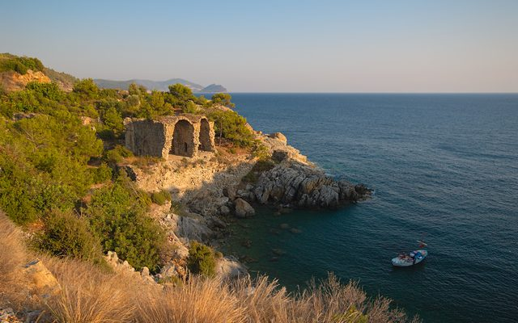
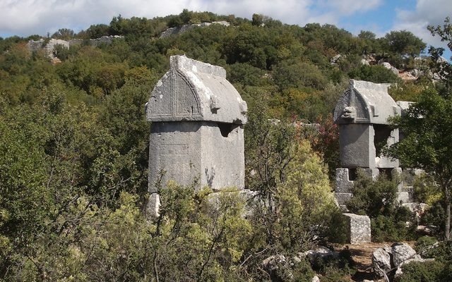

Home › Things to see, province by province › Antalya
The Kültür Varlıkları guide lists 75 places in Antalya: 48 archaeological site, 11 museum, 6 castle & historic building, 3 waterfall, 3 canyon, 2 natural site, 1 religious building, 1 hiking trail. Below you will find the highlights, a map and the full list.
⭐ Highlights

1 · Antalya · Archaeological siteXanthos Archaeological Site
Xanthos was Lycia's most important city and long its administrative centre.

2 · Antalya · MuseumAntalya Museum
Antalya Museum is one of Türkiye's most comprehensive archaeological museums, uniting treasures from Pamphylia, Lycia and Pisidia.

3 · Antalya · Archaeological siteAspendos
Aspendos, on the Köprüçay (ancient Eurymedon), has one of the best-preserved theatres of the ancient world.
🗺 On the map
📍 All places (75)
Archaeological site (48)
Xanthos Archaeological SiteArchaeological site · UNESCOAspendosArchaeological site Patara Archaeological SiteArchaeological site
Patara Archaeological SiteArchaeological site Perge Archaeological SiteArchaeological site
Perge Archaeological SiteArchaeological site Side Archaeological SiteArchaeological site
Side Archaeological SiteArchaeological site Ancient City of Antalya SyedraArchaeological site
Ancient City of Antalya SyedraArchaeological site Ancient City of Antiokheia ad CragumArchaeological site
Ancient City of Antiokheia ad CragumArchaeological site Antiphellos Antik Tiyatrosu (Kaş)Archaeological site
Antiphellos Antik Tiyatrosu (Kaş)Archaeological site Ancient City of AperlaiArchaeological site
Ancient City of AperlaiArchaeological site Ancient City of Apollonia (Likya)Archaeological site
Ancient City of Apollonia (Likya)Archaeological site Ancient City of AriassosArchaeological site
Ancient City of AriassosArchaeological site Arykanda Archaeological SiteArchaeological site
Arykanda Archaeological SiteArchaeological site Ancient City of IdebessosArchaeological site
Ancient City of IdebessosArchaeological site
Ancient City of IotapeArchaeological site Kekova Sunken CityArchaeological site
Kekova Sunken CityArchaeological site
Ancient City of KyaneaiArchaeological site Likya Uygarlıkları Müzesi and Andrıake Archaeological SiteArchaeological site
Likya Uygarlıkları Müzesi and Andrıake Archaeological SiteArchaeological site Limyra Archaeological SiteArchaeological site
Limyra Archaeological SiteArchaeological site Myra Archaeological SiteArchaeological site
Myra Archaeological SiteArchaeological site Olympos Archaeological SiteArchaeological site
Olympos Archaeological SiteArchaeological site Phaselis Archaeological SiteArchaeological site
Phaselis Archaeological SiteArchaeological site Ancient City of PhellosArchaeological site
Ancient City of PhellosArchaeological site Ancient City of RhodiapolisArchaeological site
Ancient City of RhodiapolisArchaeological site Ancient City of SebedaArchaeological site
Ancient City of SebedaArchaeological site Ancient City of Seleukeia (Pamfilya)Archaeological site
Ancient City of Seleukeia (Pamfilya)Archaeological site Ancient City of SelgeArchaeological site
Ancient City of SelgeArchaeological site Ancient City of SelinusArchaeological site
Ancient City of SelinusArchaeological site Ancient City of SillyonArchaeological site
Ancient City of SillyonArchaeological site Simena Archaeological SiteArchaeological site
Simena Archaeological SiteArchaeological site Ancient City of SuraArchaeological site
Ancient City of SuraArchaeological site Ancient City of TeimiussaArchaeological site
Ancient City of TeimiussaArchaeological site Termessos Archaeological SiteArchaeological site
Termessos Archaeological SiteArchaeological site Ancient City of TrebennaArchaeological site
Ancient City of TrebennaArchaeological site Ancient City of TyberissosArchaeological site
Ancient City of TyberissosArchaeological site Öküzini CaveArchaeological siteAncient City of AkalissosArchaeological siteAncient City of ArneaiArchaeological siteBeldibi CaveArchaeological siteAncient City of EtennaArchaeological siteAncient City of GagaeArchaeological siteAncient City of IsindaArchaeological siteAncient City of KandybaArchaeological siteAncient City of KitanauraArchaeological siteAncient City of KorydallaArchaeological siteAncient City of LamosArchaeological siteAncient City of PednelissosArchaeological siteAncient City of TrysaArchaeological siteAncient City of İdyrosArchaeological site
Öküzini CaveArchaeological siteAncient City of AkalissosArchaeological siteAncient City of ArneaiArchaeological siteBeldibi CaveArchaeological siteAncient City of EtennaArchaeological siteAncient City of GagaeArchaeological siteAncient City of IsindaArchaeological siteAncient City of KandybaArchaeological siteAncient City of KitanauraArchaeological siteAncient City of KorydallaArchaeological siteAncient City of LamosArchaeological siteAncient City of PednelissosArchaeological siteAncient City of TrysaArchaeological siteAncient City of İdyrosArchaeological siteMuseum (11)
Antalya MuseumMuseum Alanya MuseumMuseum
Alanya MuseumMuseum Antalya Atatürk House MuseumMuseum
Antalya Atatürk House MuseumMuseum Antalya Ethnography MuseumMuseum
Antalya Ethnography MuseumMuseum Antalya Oyuncak MuseumMuseum
Antalya Oyuncak MuseumMuseum Aziz (St.) Nikolaos Monument MuseumMuseum
Aziz (St.) Nikolaos Monument MuseumMuseum Side MuseumMuseumAlanya Atatürk House MuseumMuseumAntalya Nekropol MuseumMuseumElmalı MuseumMuseumMevlevihane MuseumMuseum
Side MuseumMuseumAlanya Atatürk House MuseumMuseumAntalya Nekropol MuseumMuseumElmalı MuseumMuseumMevlevihane MuseumMuseumCastle & historic building (6)
 Alanya CastleCastle & historic building
Alanya CastleCastle & historic building AlarahanCastle & historic building
AlarahanCastle & historic building Hadrian KapısıCastle & historic building
Hadrian KapısıCastle & historic building Köprüpazar (Aspendos) BridgeCastle & historic building
Köprüpazar (Aspendos) BridgeCastle & historic building KızılkuleCastle & historic building
KızılkuleCastle & historic building Şarapsa CaravanseraiCastle & historic building
Şarapsa CaravanseraiCastle & historic building